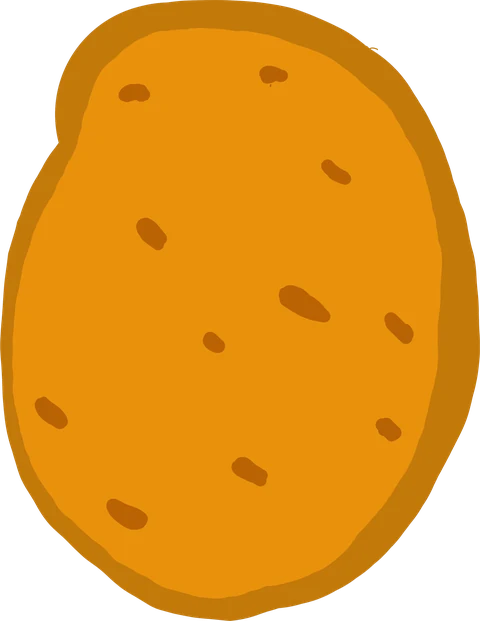
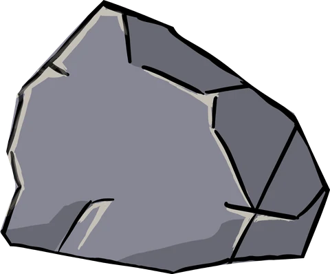
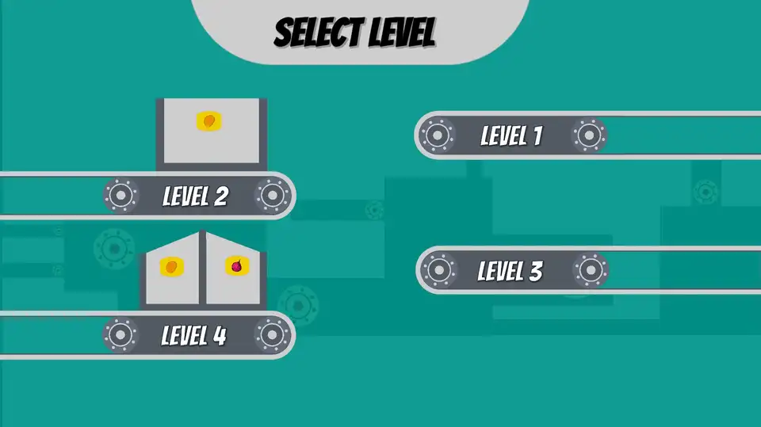

A one-button physics game about sorting a chaotic harvest.
Overview
Harvest Havok is a 2D physics game built around one input. The game started as an exercise in designing with physics.
Vegetables and rocks tumble off a factory conveyor. Time a single paddle swing to launch the produce into the basket and let the rocks drop away.
Heads up: this game needs a keyboard (SPACEBAR) and is not optimized for mobile devices. For the best experience, play on a desktop or laptop.
The game takes a short time to load, especially the first time you play. When it has loaded, click the game screen once, then press SPACEBAR to swing the paddle.
⏸ The game is paused. Click on the game screen to resume.
The cast

PotatoOnion

Rock
Core loop
1. Spawn
A vegetable or rock drops onto the conveyor
2. Fall
It rolls off the edge with its own mass and shape
3. Hit
Tap SPACEBAR to swing the paddle
4. Land
Vegetable in basket: score up. Rock: score down
Next object: an indicator shows what is coming
Player decision
Game event
Scoring
+10Right vegetable in the right basket
+2Vegetable in the wrong basket (partial credit for the hit)
−10Rock in a basket
10 s“Last Chance” countdown once the last vegetable is in play
Level design
Four levels, one new idea each
Level
Basket
What it teaches
Level 1
Fixed
Learn the swing. Potatoes only.
Level 2
Moving
Read the basket's motion and time the hit.
Level 3
Fixed, split
Choose the right vegetable for the right bin.
Level 4
Moving, split
All of the above at once.
The level button shows the rules
I wanted players to know what a level asks of them before they enter it. Each level-select button is a small working conveyor: it spawns the vegetables that level uses, and a basket moves on it if the level has a moving basket.

The level select screen: every button previews its own level.
Designing through playtesting
Playtest 1
Randomness got in the way of mastery
Problem
Every potato and onion spawned with a random size and weight, so the same swing gave a different result each time. Players could not get a feel for the paddle.
“It feels random. I can't tell if I'm getting better.”
Fix
Objects now spawn at one of three preset sizes (small, medium, large), each with a matching mass. There is still variety, and each size behaves the same way every time.
Takeaway: In a physics game, too much randomness stops players from improving. Variation should be readable.
Playtest 2
Players couldn't read the arc
Problem
After an object left the paddle, nothing showed where it had gone. Aiming the next swing was a guess, and most players did not improve between attempts.
“I have no idea why that one went in and that one didn't.”
Fix
Every airborne object now leaves a color-coded, fading trail (orange for potatoes, pink for onions, grey for rocks), so players can see the last arc and adjust their next swing.
Takeaway: A short visual record of the last shot turns the next shot into a decision instead of a guess.
Playtest 3
Unlucky spawns felt unfair
Problem
The spawner chose vegetables and rocks at random, so sometimes three rocks came in a row. Players blamed the game.
“It just doesn't give me anything to hit.”
Fix
Vegetables now spawn on a timer that interleaves them with rocks, so pacing is steady and a level always gives the player something to hit.
Takeaway: Players judge fairness by pacing, not by probabilities.
Game feel: making hits feel good
Once the mechanic worked, I added feedback on top of it: small, overlapping signals that confirm what the physics already shows.
Score popups
“+10” / “−10” numbers burst out of the basket with their own physics (random velocity and tilt), so the player sees the score change happen.
Spawn indicator
A preview of the next vegetable gives the player a moment to plan.
Audio feedback
Separate sounds for the paddle swing, a correct catch, a wrong catch, and hard impacts. The impact sound plays only above a speed threshold, with a cooldown so it does not repeat constantly.
Living machinery
The gears on the moving basket turn in the direction the basket is moving and stop when it stops.
Technical highlights
Object pooling
Vegetables, rocks and the hundreds of trail points are pre-created and reused rather than created and destroyed each time, which keeps frame times steady during busy moments.
Controlled physics variety
One system sets the scale and Rigidbody2D mass together from three size tiers, so how big an object looks always matches how heavily it moves.
Stable tumbling
Each object's angular velocity is capped so it spins in a believable way instead of erratically.
Trail system
Recording starts when an object leaves the paddle and stops when it lands in a basket or hits the conveyor. Each point is tinted by object type and fades out over time.
Paced spawner
A timer schedules vegetables and fills the gaps with rocks. A per-level quota decides the potato/onion split and when the level ends.
Moving goals
The basket moves between two points with a pause at each end, and the gear rotation is tied to that movement.
Level flow
A level manager counts vegetables that have been resolved (caught or missed) and triggers the last-chance countdown and the end screen. A persistent score keeper and audio manager (singletons that survive scene loads) carry the score and music across scenes.
What I learned
On playtesting
Playtesting changed almost every decision I had made on paper. My instincts about difficulty and clarity were wrong more often than right. Watching real players was the only way I found problems I could not see myself.
On game feel
Feedback isn't decoration. The same hit can feel forgettable or great depending on what the game does in the half-second after it. Juice made a mechanic that worked into one that was satisfying to play.